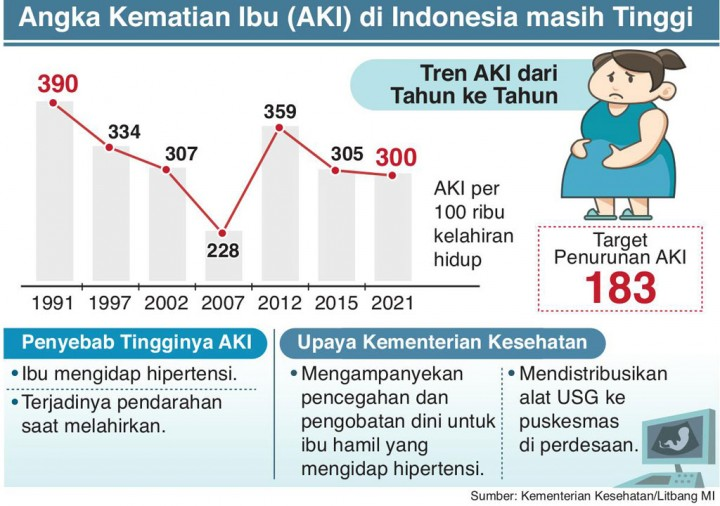
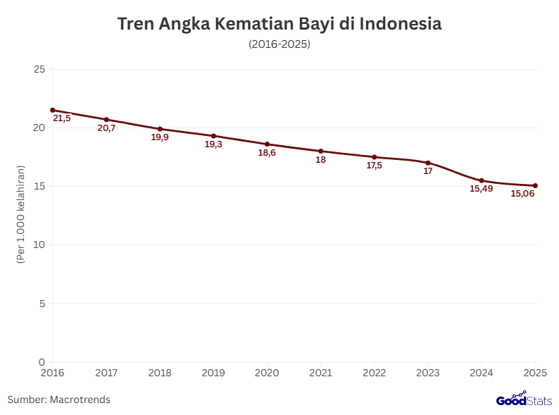
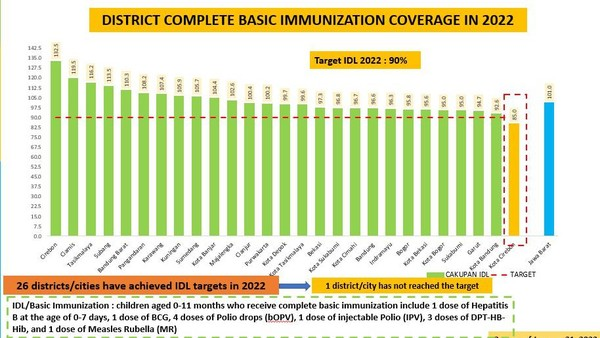
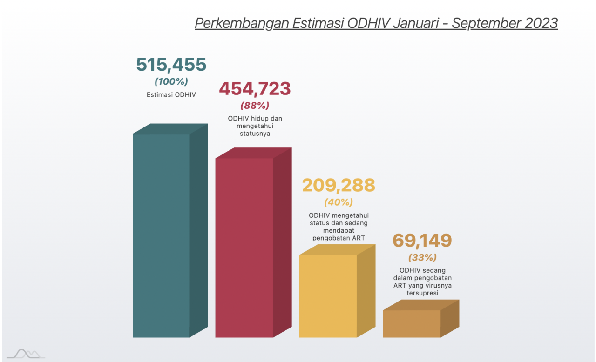
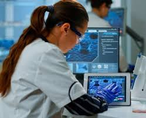
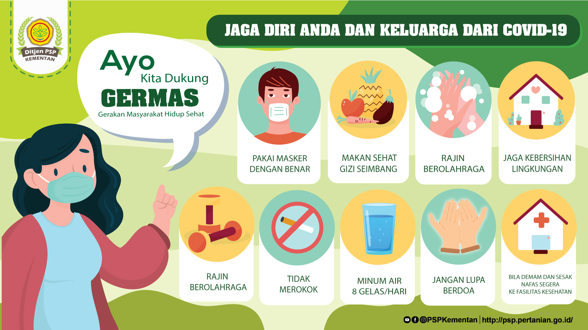

Pada tahun 2015 banyak negara bersatu dan membentuk tujuan pembangunan berkelanjutan atau yang sekarang dikenal SDGs yang didiskusikan melalui sidang PBB. Dikarenakan kekhawatiran akan permasalahan global. Terdapat 17 sdgs atau 17 tujuan dan sasaran global yang dirancang untuk menjadi pedoman bagi seluruh negara hingga 2030 nanti. Salah satunya adalah sdgs 3. SDGs 3 ini tentang good health and well being atau kesehatan dan kesejahteraan dalam masyarakat. SDGs 3 menjamin kehidupan yang sehat dan mendorong kesejahteraan bagi semua orang.
Tujuan ini menekankan pentingnya menjaminkan semua orang tanpa membeda-bedakan untuk memiliki akses terhadap layanan kesehatan yang berkualitas dan kehidupan sejahtera. SDGs 3 ini menargetkan berbagai aspek kesehatan mulai dari penurunan angka kematian ibu, bayi baru lahir, dan balita serta mendukung pengembangan vaksin dan obat penyakit lainnya. Melalui tujuan ini, negara-negara dapat berkomitmen untuk memastikan bahwa kesehatan sangat penting. Diharapkan setiap negara dapat bekerja sama untuk mengambil tindakan agar dapat menciptakan masyarakat yang lebih sejahtera
Data Angka Kematian Ibu (AKI)
Data Angka Kematian Bayi
Data Presentase Imunisasi Dasar Lengkap
Data Angka infeksi HIV yang tidak terinfeksi HIV
Potensi atau kemampuan SDM yang besar dapat menjadi salah satu kekuatan utama agar bisa tercapai tujuan SDGs ini. Indonesia dapat memanfaatkan tenaga kesehatan, pekerja kesehatan masyarakat dan potensi relawan agar bisa mendukung program kesehatan di berbagai daerah

Pemanfaatan teknologi dalam mencari penemuan baru untuk pengobatan dan pencegahan penyakit. Inovasi teknologi sangat berperan dalam meningkatkan kualitas layanan kesehatan dan juga akses pelayanan. Melalui teknologi telemedicine dan layanan digital masyarakat yang berada di daerah terpencil tetap dapat berkonsultasi kepada tenaga medis.
Pemerintah Indonesia telah membuat berbagai program kerja yang dapat mendorong tercapainya SDGs 3. Program-program utama seperti GERMAS, JKN, dan PKH dapat membantu tercapainya tujuan SDGs 3. Program-program ini bertujuan untuk meningkatkan kesadaran masyarakat terkait pentingnya menjaga kesehatan dan membuka akses terhadap layanan kesehatan
